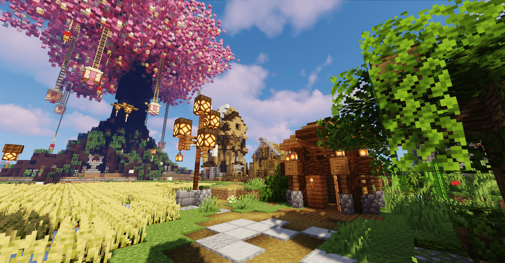
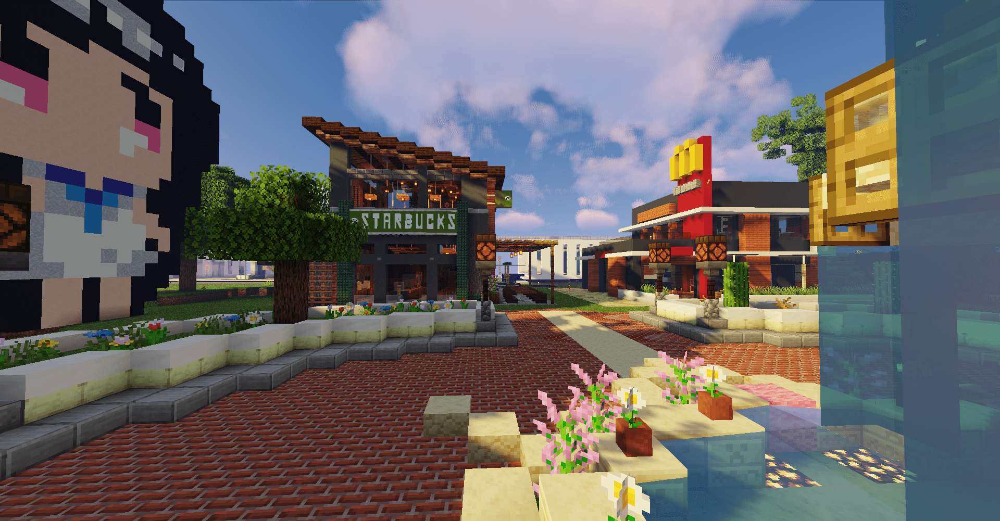
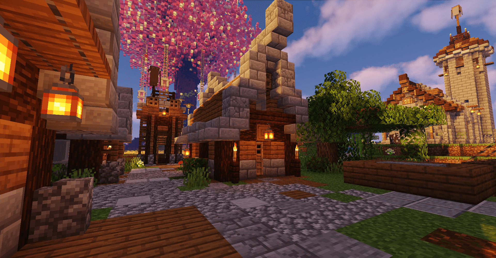

这是一个什么样社区？
“海纳百川，有容乃大”，SoTap社区欢迎所有拥有着开放和包容理念的人群。无论你是熟悉mc或是初次接触mc，加入即为家人。这里，社区成员不仅仅是游戏玩乐，卖萌打滚，更有着多元且合适的想法交流，热烈而欢快的讨论。无论早中晚，一声“你好！”表达了所有真挚的问候。游戏内有各种特色活动，从夏季so运会到玩家自发组织各类比赛；从各色小游戏到组团下地牢；玩家们在玩乐中体会生活的花红柳绿，社区的温馨美好。
我们由衷希望SoTap是一个愉快的服务器，亦是一个温馨的兴趣社区，是玩家的庇护所，养老地，甚至是心中的一片乐土。我们也希望通过这个社区，去沟通世界，去成为不同国家不同地区玩家的友情的桥梁，成为所有成员自由而充满着温柔的港湾。
OFG 社区和普通游戏服务器之间的区别
OFG 是 Ought For Gay 的缩写，OFG 性质的社区则是专注于 LGBT
群体用户体验的社区。LGBT 群体将是本游戏服务器的主要玩家。我们与其它服务器最大不同的一点是，我们的服务器的主要受众群体是
Gay/geɪ/同性恋，当然也会有「直男/直女」的加入。因此，如果您对同性恋抱着「包容、不歧视、理解」的态度加入我们，我们会热烈地欢迎您。

SoTap 社区服务器致力于为玩家提供一个线上的社区，另一个维度的温馨世界。我们希望营造一个轻松、舒适、友善的社区环境和提供极致的游戏体验，同时以游戏为载体将其变为一个有趣的交友平台让玩家在游玩的同时找到更多志同道合的的伙伴。我们更希望将这里构建成一个没有歧视的理想世界，这里同/直/双都可以无偏见的和平友好共处，让这里成为 LGBT 玩家们的心灵港湾。
也正因为我们服务器的「特殊」性质，我们更加致力于为同性恋群体营造一个完美、温馨的 Minecraft 游戏环境，而又或者更扩大地说，制作一个完全独立自主的、玩家服务型的游戏服务器。
Sotap 希望您能够沉浸在游戏中——不，不仅仅是游戏中，而是这个团体中。我们也希望我们的玩家团队，在未来能够更加理解和包容彼此，真正实现服务器的「温馨」场面。

用心造就的社区
SoTap 也是以玩家为中心的服务器。所有的玩家平等、互相尊重。我们希望所有人都可以在这里感受到「家」的温暖。这里的玩家来自五湖四海，遍布各行各业。有天天被996工作制压榨的腾讯员工；有来自武汉大学、厦门大学、Cornell大学等高校以及研究院的大学生；更有机灵活泼、朝气蓬勃的高中生。这里的 LGBT 玩家们也并不特殊，他们也和许许多多的人一样。有 Soon 了几天立志要建宏伟建筑，结果上线5分钟便烂尾的咕咕咕大神；有默默登录，不求名不求利隐居树屋浑水摸鱼天天只专心找动物的佛系玩家；更有人狠话不多，上线就建成服务器世界树的建筑向玩家。满怀着爱和信念。我们正在缔造美好的互联网世界。

到爱发电为我们充能